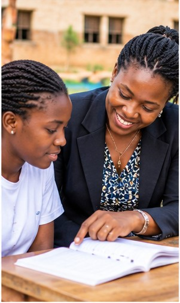
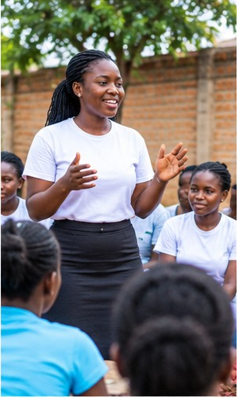
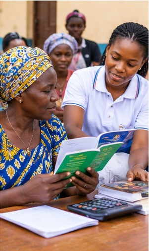
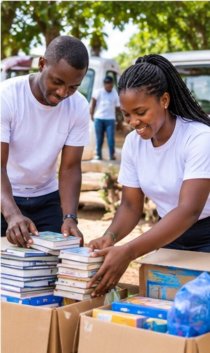

Second-Chance Education Programme
Supporting access to learning and second-chance pathways.
Learn moreWe empower vulnerable girls, women, youth, and communities through education, mentorship, economic empowerment, agroecology, environmental stewardship, and sustainable livelihoods.

Explore the programmes creating practical pathways to opportunity.








We work alongside vulnerable girls, women, young people and communities to strengthen access to opportunities, practical skills and supportive relationships.
We work with communities rather than simply for communities. Beneficiaries, volunteers, partners and local leaders can share ideas, stories and solutions.
Meet the people we serveSomeone believed in us, so we now choose to believe in others.
Our work is grounded in compassion, integrity, empowerment, inclusiveness, accountability, volunteerism, sustainability, innovation and community participation.
Updates, announcements, programme activities and community stories from Bright Futures Foundation.